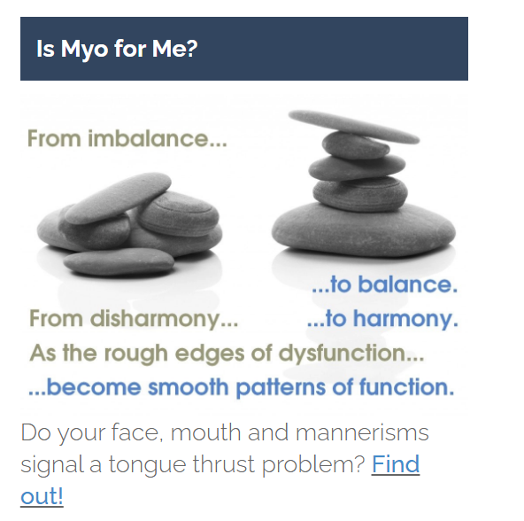
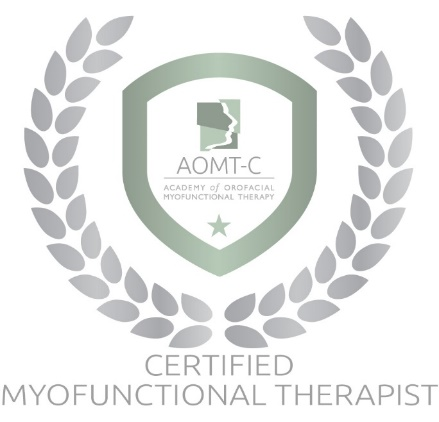

patient portal
patient videos
Myofunctional therapy is a program of exercises that helps you stop oral and facial habits that can ruin your smile, change your appearance and sap your health. It retrains the muscles of your mouth, jaw and face, bringing them into harmony. And it instills new and positive habits to make sure those changes last.
“Myo” can help you:
- STOP a tongue thrust habit.
- START breathing through your nose instead of your mouth.
- QUIT thumb-sucking, nail-biting, lip/cheek-chewing or other poor habits.
- OVERCOME unsightly manners of eating and drinking.
- IMPROVE head-neck-body posture.
- PREVENT or correct Long Face Syndrome.
- ESTABLISH a harmonious oral environment.
- BETTER DEAL with issues such as speech problems, sleep apnea, snoring, digestion, clenching/grinding habits and TMJ disorders.

Does your face, mouth, and mannerisms signal a myofunctional disorder?
Contact OMT Health:
MYOFUNCTIONAL THERAPY IN PERSON OR ONLINE
2660 Townsgate Road, Suite 450A, Westlake Village, CA 91361

102 S. Catalina St., Ventura, CA 93001

Emily was born and raised in Southern California. She completed her undergraduate studies at UC Davis and later received her Master’s in Occupational Therapy from Nova Southeastern University in Fort Lauderdale, Florida. She holds National Board Certification through the NBCOT and is also a Certified Low Vision Therapist. Emily started off her career working at the US Department of Veterans Affairs, treating blind and low vision veterans, as old as one hundred two. Emily later transitioned to working in the school setting, providing occupational therapy to students with special needs ranging from three years old and up.
Emily fell into myofunctional therapy after being a patient herself, treated by the esteemed Joy Moeller. She is fortunate to have experienced therapy firsthand from one of the top therapists in the field. Emily is forever grateful for the guidance and support Joy has given her. With Joy’s encouragement, along with a newfound passion for myo after experiencing how life changing it can be, Emily went on to become a Certified Orofacial Myofunctional Therapist through the Academy of Orofacial Myofunctional Therapy. She continued her education through classes and being personally trained by renowned myofunctional therapist and pioneer in the field, Barbara J. Greene. Emily has since become Barbara’s associate, delivering services using her signature methods and protocols. Emily currently works alongside Barbara in her in Ventura office. She also runs her own practice in Westlake Village.
Emily has found happiness in being able to work with patients across the lifespan and seeing transformative results regardless of age.
How long does a program take?
A traditional program takes place over a twelve month period, although treatment length may vary. There are three phases to therapy: the intensive phase, the habituation phase, the maintenance phase. Initially, visits are held weekly but move to monthly intervals as therapy progresses. For success in this therapy, consistent exercise every day is necessary until the patient has corrected their improper muscle pattern. It also requires commitment by the patient, family, and time. It is possible that your myofunctional therapy journey will include referrals to other professionals such as dentists, doctors, orthodontists, ENTs, sleep specialists, and osteopaths. These factors may change the length of your program, however, a holistic approach is essential for successful treatment. Often, one of these professionals will refer you for myofunctional therapy. If a thumb or finger sucking habit is present, it must be addressed and eliminated before treatment can commence. A habit elimination program can vary but might take up to thirty days.
What does myofunctional therapy treatment look like?
You will be given a therapy kit at the beginning of your program. Each visit you will receive a list of exercises to perform, some of which might include items from your kit, though many do not require extra materials. You are expected to complete exercises two times a day, with three times a day being encouraged. Orofacial myofunctional therapy is painless, and the exercises are relatively simple.
Should myofunctional therapy occur before or after orthodontic treatment?
Orthodontic and Orofacial Myofunctional Therapy are closely related, with each directly impacting the other. Each case must be analyzed and discussed by the professionals involved. Treatment might be indicated before, during, or after orthodontics. Specialists in Orofacial Myofunctional Therapy promote muscle and orofacial function balance, improving tongue posture and thus aiding in maintaining orthodontic stability, helping to diminish orthodontic relapse after braces are removed.
What ages do you treat?
Myofunctional therapy is suitable for everyone from age 4 upwards, but treatment around the age of 7 or 8 is ideal as oral habits are less ingrained and easier to change, which can encourage normal dental growth. Motivation and commitment are key to success.
Do you take insurance?
Upon request, a superbill will be provided for you to submit to your insurance company.
Do you offer telehealth?
Yes. You have the option of being treated in person or via video conferencing. You can also opt for a combination of both if preferred.
What research is available?
Myofunctional Therapy is a relatively new field that is gaining recognition in the medical community. Research studies support the effectiveness of this discipline. Listed below are results of studies which show the significant impact of myofunctional therapy treatment.
You can find more information below:
Orofacial Myofunctional Therapy (OMT), more commonly referred to as myofunctional therapy, is related to the study, research, prevention, evaluation, diagnosis, and treatment of functional and structural alterations in the region of the mouth (oro), face (facial), and regions of the neck (oropharyngeal area). The purpose of therapy is to assist the normalization of the developing, or developed, craniofacial structures and function through neurological re-education exercises.
OMT treats Orofacial Myofunctional Disorders (OMDs), which are disorders of the muscles and functions of the face and mouth. An OMD is a pathological condition created by disruption in the functions of the stomatognathic system, primarily functions related to chewing, breathing, and swallowing. OMDs may affect, directly and/or indirectly: sleep apnea, facial skeletal growth and development, breathing, chewing, swallowing, speech, occlusion, posture, temporomandibular joint movement, oral hygiene, stability of orthodontic treatment, facial esthetics, restricted facial and lingual frenum, forward head posture, incorrect oral habits and more.
There are 32 identified Orofacial Myofunctional Disorders. Click on each condition to learn more about the orofacial myofunctional disorder, how orofacial myofunctional therapy helps, as well as pictures of what can happen if left untreated.